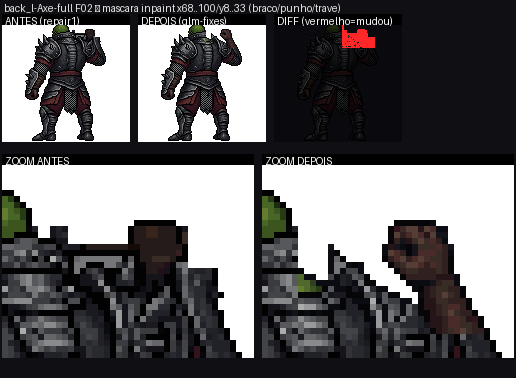

Status: GLM_BODY_FIXES_READY · TECHNICALLY_COMPLETE · VISUAL_REVIEW_REQUIRED · PENDING_CREATOR (global: ARTISTIC_REVISION_REQUIRED preservado)
Limite visual declarado: o DEV não possui visão de imagem; toda análise foi textual (Pillow/hex). Inspeção visual final cabe ao QA independente Gemini Flash Antigravity e ao Criador.
Defeito: REAR-01-RESIDUAL-A/B (F06)
Correção: 5 px flutuantes -> alfa 0; 30 px vinho -> malha (doadores F05/F07 mesmas coords); 0 fora do permitido
Defeito: REAR-02-PERSISTENT (F02)
Correção: Re-autoria anatomica via inpaint PixelLab (job 540302e4, seed 20261029, 6.0 gen) composta no Aseprite; delta 510 px confinado a mascara x68..100/y8..33; braco conectado ombro->punho

FIX A (back_r-Sword F06): diff 35 px, 0 fora do permitido; 5 flutuantes alfa 0; 0 px vinho em y88..94/x45..55; 11 frames byte-idênticos; ground 126/190; composto exato → PASS FIX B (back_l-Axe F02): diff 510 px, 0 fora da máscara; 0 runs de trave ≥8px; componente braço 673 px (y10..37) conectado ombro→zona punho; punho marrom 15 px (x83..91/y16..20); y≥40 idêntico ao original; 11 frames byte-idênticos; ground 126/190; composto exato → PASS Chaves F03/F04/F07: SHA-256 idênticos aos aceitos pelo QA (assert no gerador) — os 6 arquivos. PixelLab: saldo 1342.70 → 1336.70 (1 job inpaint 6.0 gen). Custo LLM não informado.